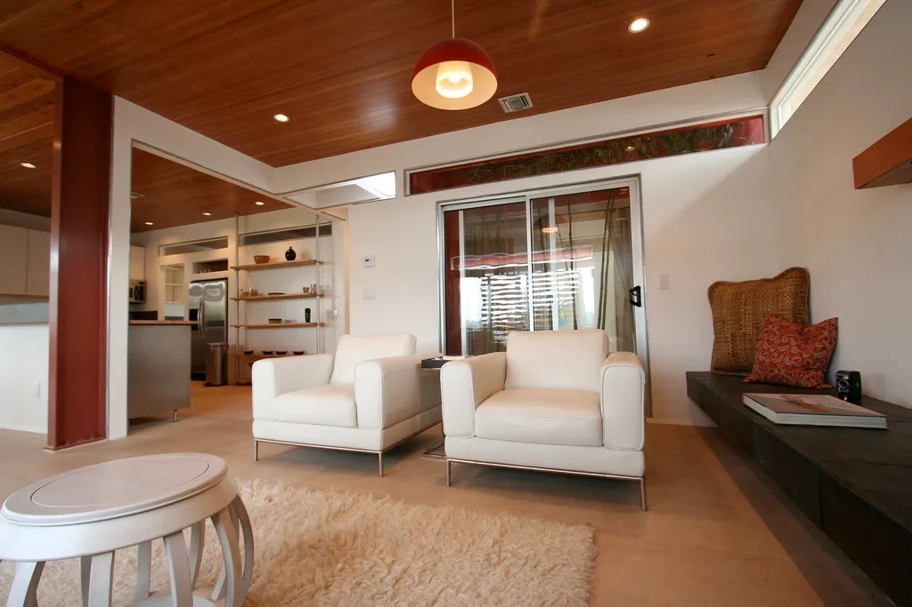
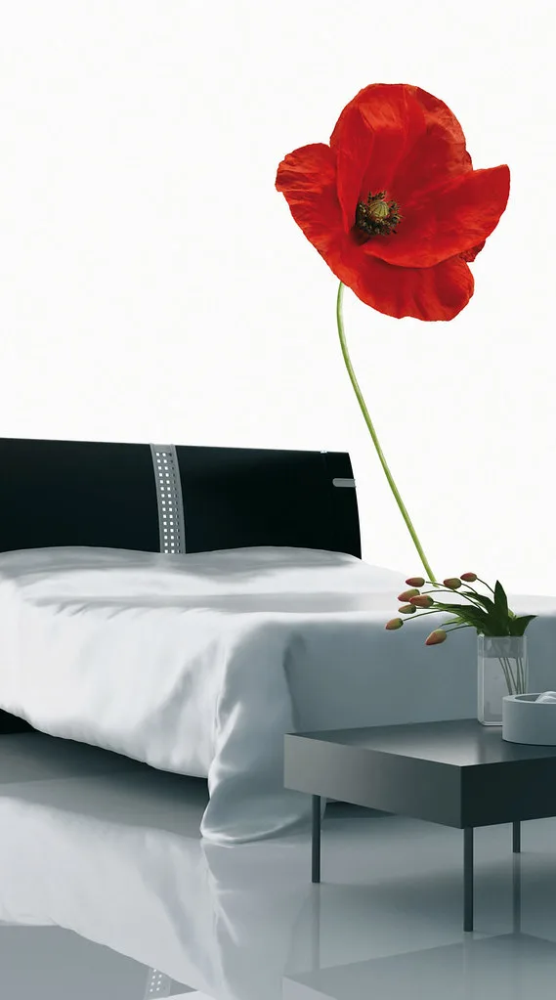
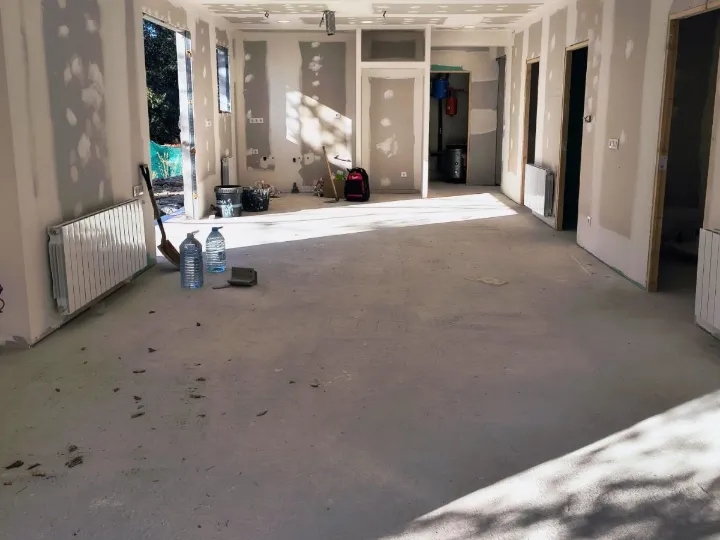
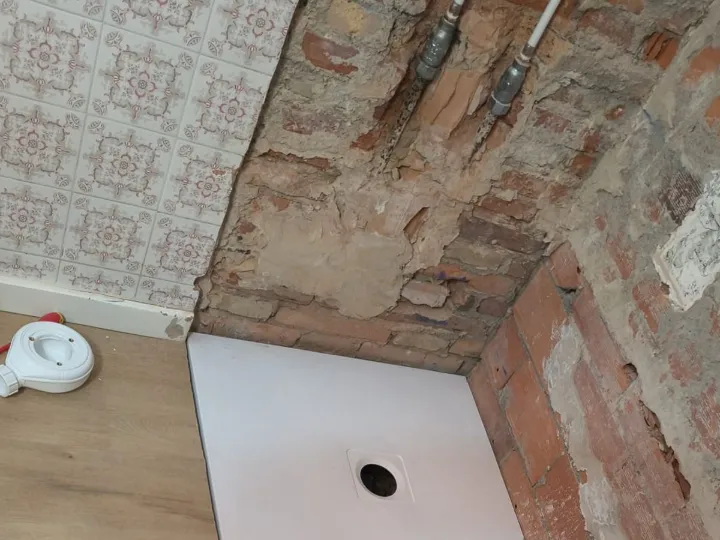
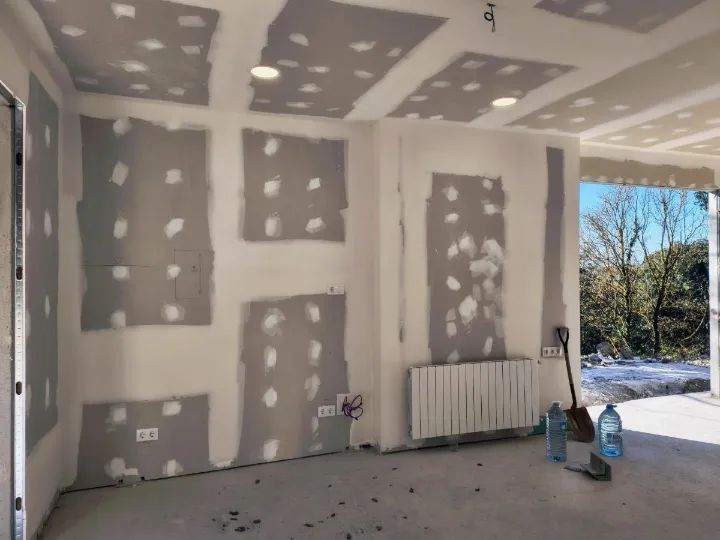
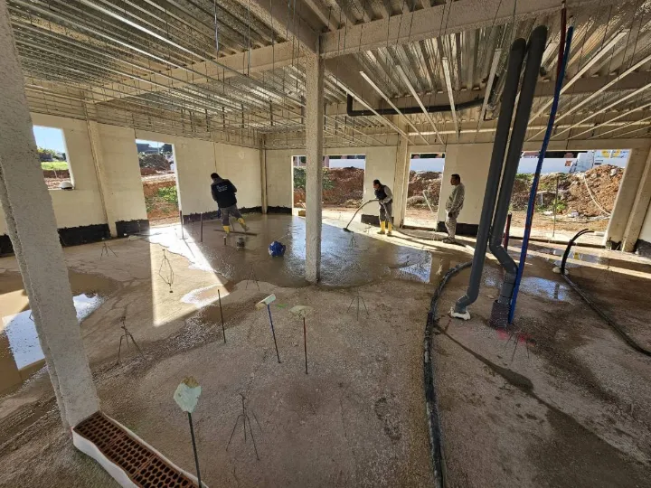
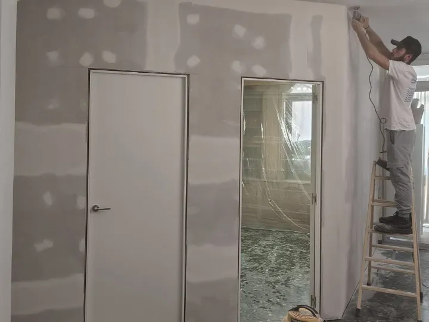
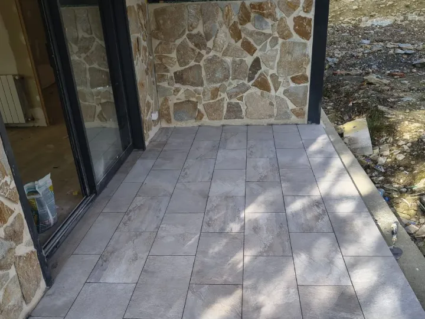
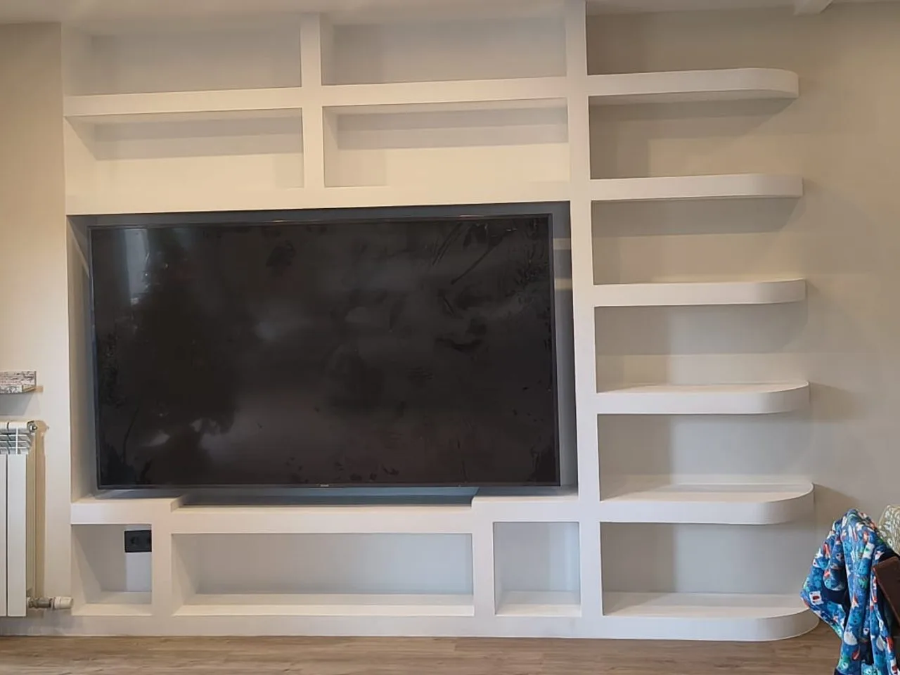
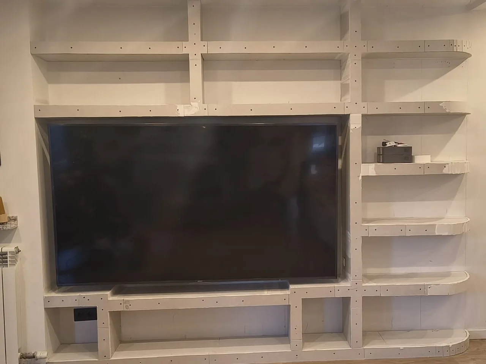

Un presupuesto claro, antes de empezar.
Se lo entregamos por escrito y detallado, después de ver la vivienda. Así sabe desde el primer día qué se va a hacer y en qué orden.

Baños, cocinas, reformas integrales y obra nueva en el Maresme, la Selva y Barcelona. La visita no cuesta nada.
Zona de trabajo
Barcelona y Girona, desde Tordera
Visita y presupuesto
Sin coste y sin compromiso
Valoración de clientes
5,0 sobre 5 en Google
Se lo entregamos por escrito y detallado, después de ver la vivienda. Así sabe desde el primer día qué se va a hacer y en qué orden.
Quien le presupuesta la reforma es quien la dirige y quien responde. No tendrá que perseguir a cinco gremios para saber cómo va su casa.
Le diremos con franqueza qué merece la pena cambiar y qué no. A veces la mejor reforma es la que se hace a tiempo y sin excesos.
Llevamos desde 2016 entrando en casas de verdad: pisos con la instalación original, baños que ya no dan más de sí, cocinas que se quedaron pequeñas y casas que piden crecer.
Trabajamos con materiales y sistemas actuales, pero sin perder lo que enseña el oficio: saber qué aguanta, qué da problemas con los años y qué conviene resolver antes de alicatar.
La confianza de quien nos llama se gana igual en cada obra: siendo honestos con lo que hace falta, ordenados en la ejecución y limpios al terminar cada jornada.
Jesús Fonseca · Desde 2016 · Tordera, Barcelona

«Todo perfecto, buen trato y buenos acabados. Trabajan rápido y eficaces.»
«Todo muy bien, gente de confianza, buen trabajo. Gracias.»
Monika Szeri«Montaje rápido y limpio del acumulador eléctrico de casa.»
Emilio Jose FonsecaObra completa o un solo oficio. Trabajamos con equipo propio y con gremios de confianza, siempre coordinados por la misma persona.

Nueva distribución, instalaciones con boletín y acabados. Le entregamos la vivienda limpia y lista para entrar a vivir.
Pedir presupuesto
Del derribo al último remate: fontanería nueva, impermeabilización, alicatado, sanitarios y mampara.
Pedir presupuesto
Abrimos la cocina al salón cuando la casa lo permite: tomas de agua y gas, electricidad al día, falso techo e iluminación.
Pedir presupuesto
Casas desde cero y ampliaciones: cimentación, estructura, cerramientos y cubierta.
Pedir presupuesto
Alisado, plastecido y pintura, con ayuda para elegir el color y todo lo demás protegido.
Pedir presupuesto
Solados, terrazas, humedades y reparaciones que conviene hacer bien y de una sola vez.
Pedir presupuestoTambién hacemos la instalación de luz, agua y gas con boletín certificado, pladur y techos, aire acondicionado, movimiento de tierras, paletería, bajantes, armarios a medida, aislamiento acústico y pequeñas reparaciones. Si lo prefiere, entregamos la obra llave en mano.
Obras nuestras, fotografiadas a pie de tajo. Pulse en cualquiera para verla en grande.


Un baño y una casa entera se preparan con el mismo cuidado. Esto entra siempre en el presupuesto: ni se cobra aparte ni hay que pedirlo.
Cubrimos suelos, muebles y accesos antes de mover nada, también en viviendas habitadas.
Contenedor, carga y retirada incluidos. No se quedan en su terraza esperando.
Le decimos cuáles hacen falta y, si lo prefiere, los tramitamos nosotros.
Sabe qué semana entra cada gremio y cuándo recupera la casa.
Se entrega limpia y recogida, no barrida por encima el último día.
Revisamos la obra con usted y corregimos lo que no convenza.
La obra sigue siempre este orden. Por eso en cada momento sabe en qué punto está su casa y qué queda por hacer.
Vamos a su casa, medimos y escuchamos qué necesita. Sin coste.
Por escrito y detallado, con materiales y plazos previstos.
Fechas, gremios y permisos resueltos antes de empezar.
Una persona al frente y la casa recogida cada día.
Revisamos juntos el resultado y repasamos lo que haga falta.
Lo que más nos preguntan antes de la primera visita. Si su duda no está aquí, llámenos al 613 76 64 76.
No. Vamos a ver la vivienda, escuchamos qué necesita y le entregamos el presupuesto por escrito, sin coste y sin compromiso.
Va por escrito y detallado, con los materiales y los plazos previstos. Así sabe desde el primer día qué se va a hacer y en qué orden.
Sí. Hacemos las instalaciones de luz, agua y gas con su boletín, de modo que quedan certificadas y en regla.
Trabajamos desde Tordera en el Maresme, la Selva y el área de Barcelona y Girona: Tordera, Blanes, Lloret de Mar, Malgrat de Mar, Palafolls, Pineda de Mar, Calella, Mataró, Girona y Barcelona. Si su población no está en la lista, pregúntenos.
Sí. Tanto una obra completa como un solo oficio: pintura, pladur, albañilería, bajantes o una reparación que conviene hacer bien y de una vez.
Sí, trabajamos también en viviendas habitadas. Protegemos suelos, muebles y accesos antes de mover nada y dejamos la casa recogida al terminar cada jornada.
Le decimos qué permisos hacen falta y, si lo prefiere, los tramitamos nosotros. El contenedor, la carga y la retirada de escombros van incluidos en el presupuesto.
Con la misma persona de principio a fin: quien le presupuesta la reforma es quien la dirige y quien responde, también cuando entran otros gremios. Si lo prefiere, le entregamos la obra llave en mano.
Cuéntenos en pocas líneas qué quiere hacer. Le llamamos para concertar la visita y, después, le entregamos el presupuesto.
Trabajamos habitualmente en